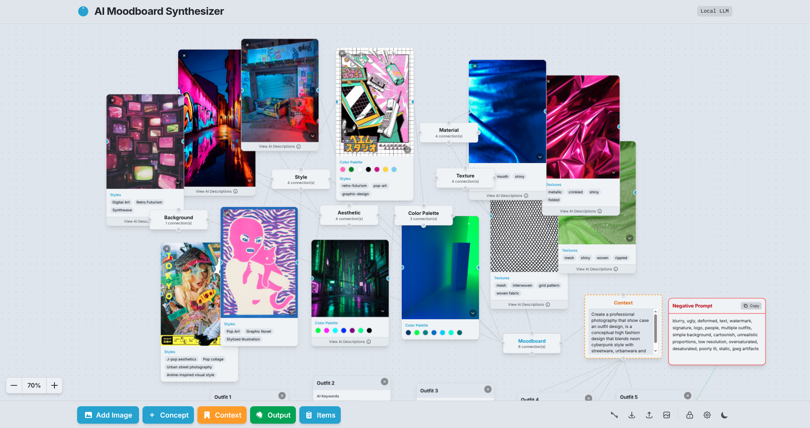
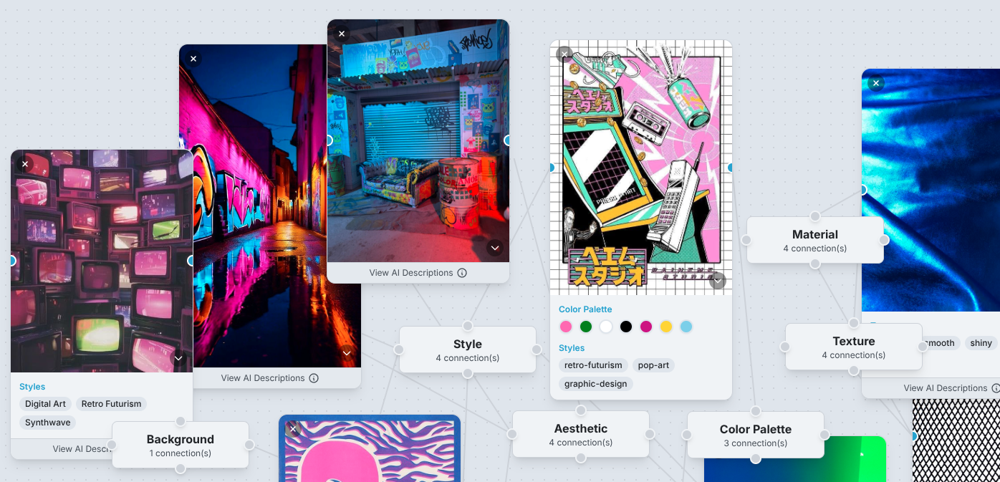
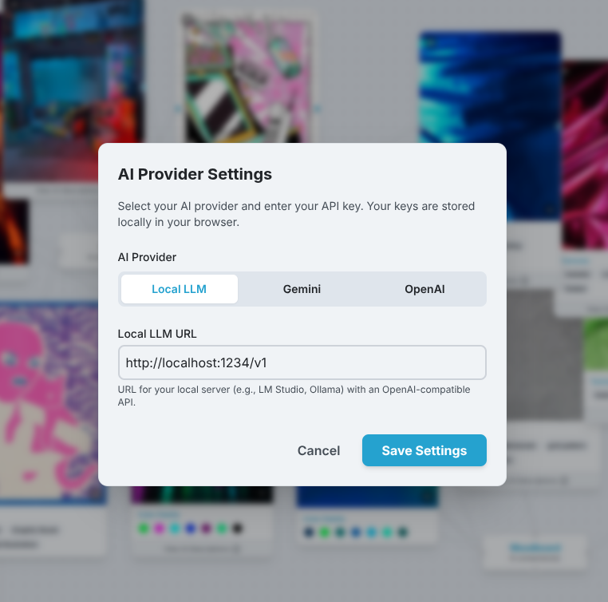
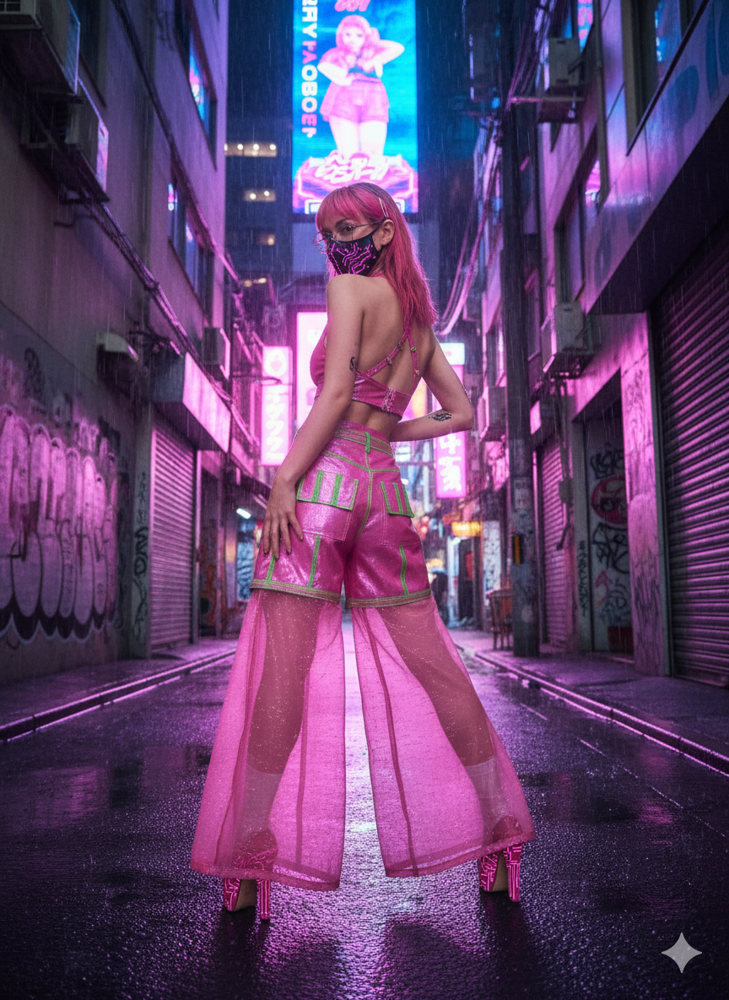
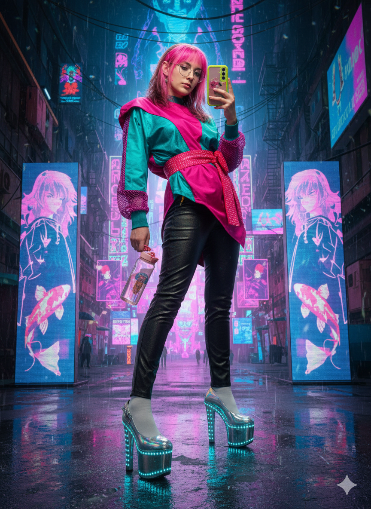

Este proyecto es una solución innovadora para diseñadores y creativos que buscan aprovechar el poder de la inteligencia artificial para generar imágenes impactantes. Desarrollamos una aplicación web que actúa como un puente entre la inspiración visual de un moodboard y las capacidades generativas de modelos de IA. Con esta herramienta, podrás:
Desarrollo Web
Integración AI
UI/UX Design
Procesamiento de Imagen




